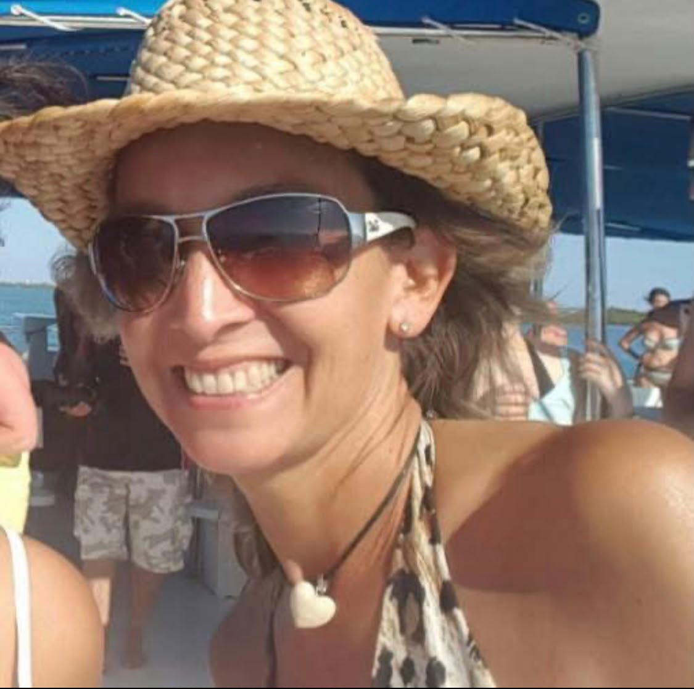

”
“Terminando mi terapia me nació hacer esto. Quiero agradecerte de corazón por todo lo que ha significado este proceso contigo. Tu acompañamiento ha sido un antes y un después en mi vida. Gracias a tu guía he aprendido que, aun frente a los mismos hechos, siempre existen distintas formas de mirarlos, sentirlos y actuar, y que esa elección cambia completamente la manera en que vivo mi día a día. Hoy me siento más consciente, más en paz y con herramientas reales para enfrentar la vida desde un lugar mucho más amable conmigo misma. Valoro profundamente tu guía, tu escucha y la forma tan respetuosa y humana en que me has acompañado en este camino de transformación. Gracias por ayudarme a reencontrarme conmigo y a vivir con una mirada distinta, más consciente y más plena.”
— Mónica Orellana (Coaching Apreciativo)
”
“Nunca pensé en pedir ayuda, nunca busqué ser parte de una terapia… Pero sin darme cuenta, conversando Denisse, la vida se confabuló para hacerme parte de un coaching ontológico… y lo agradezco, porque hoy pienso que sí lo necesitaba, pero en ese momento no lo sabía. Conversar y comentar el día a día, hablar de mis preocupaciones, penas, momentos difíciles de salud, lágrimas y alegrías… hizo que me sintiera acompañada, escuchada, comprendida y sobre todo querida.”
— María Elena Moreno (Coaching Ontológico)
